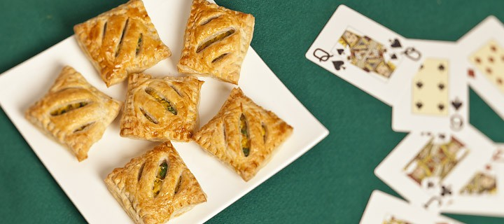
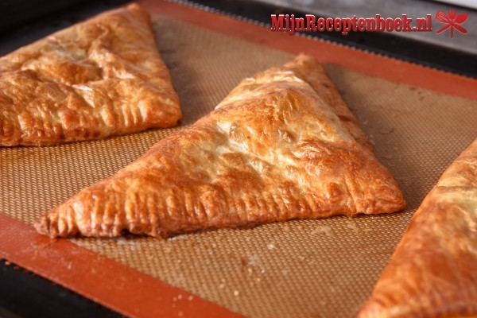
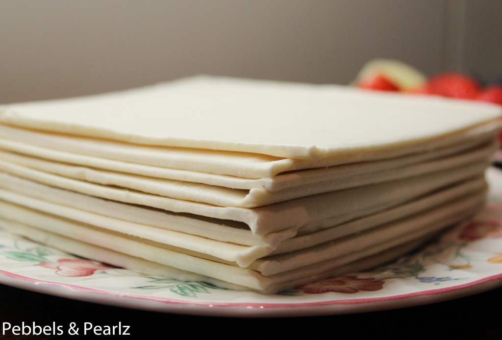
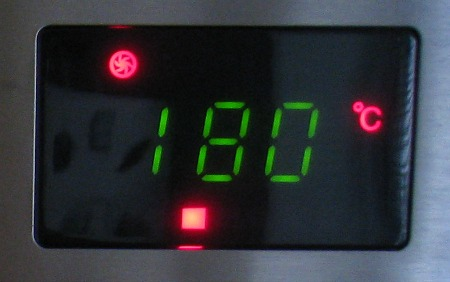
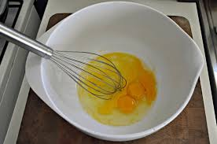

Het is een lekker hartige snack voor in de avond.Het recept komt uit Nederland, alleen de kerrie komt uit landen als India.Daar was een kruidenmengsel gemaakt en de welbekende curries zijn eigenlijk het handelsmerk van met name de indiase keuken.Het is een makkelijk gereht om te maken.Het gerecht is voor minimaal 12 personen of meer het ligt eraan hoeveel je er wilt gaan maken.Het is een makkelijk bereidbare recept, volg de aangegeven stappen goed voor een mooi resultaat.
| soort gerecht | De bereidingstijd | Aantal personen |
|---|---|---|
| Hapjes | 60mintuten+15minuten oventijd | 12 personen |

   
U kunt de hapjes zowel warm als koud serveren.
Nu kunt u lekker genieten van u zelfgemaakte hapjes.Wilt u nog meer recepten uitproberen ga dan naar
www.leukerecepten.nl